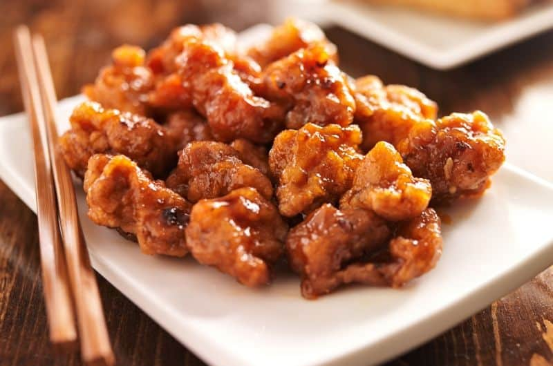
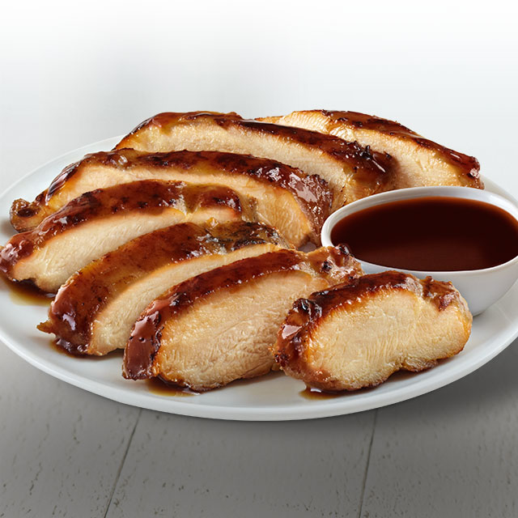
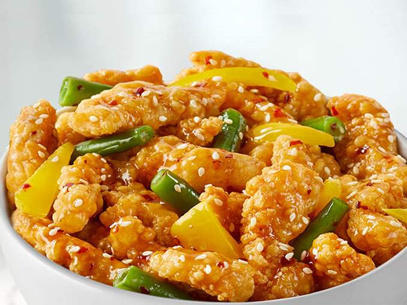
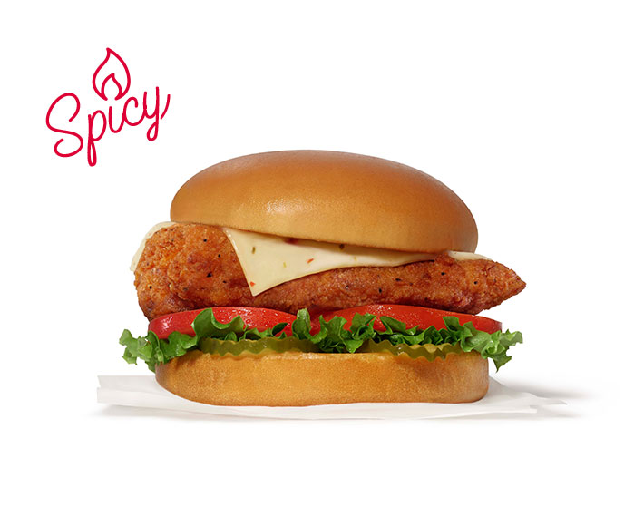
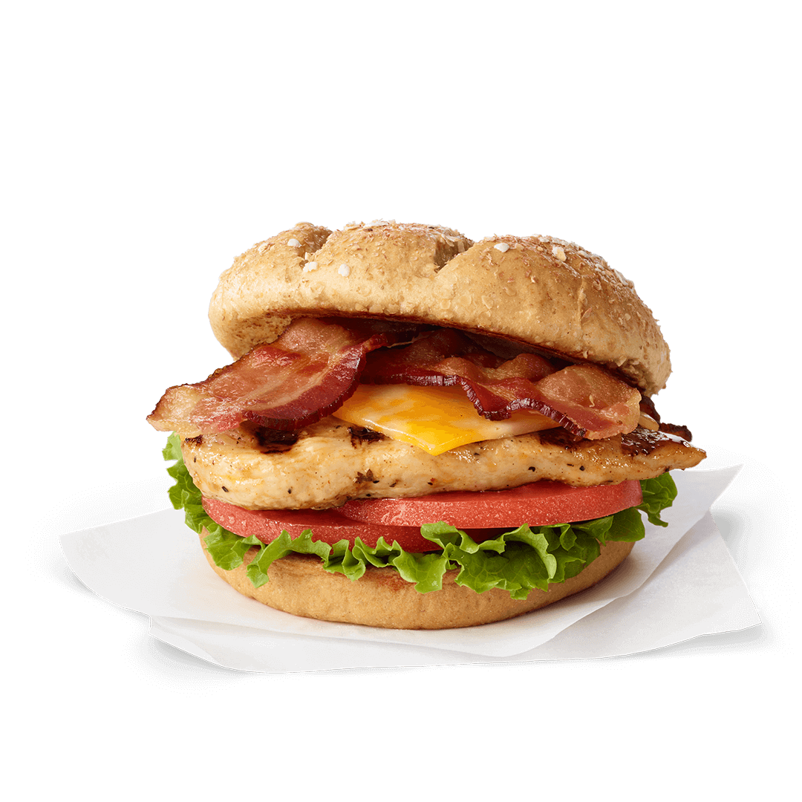
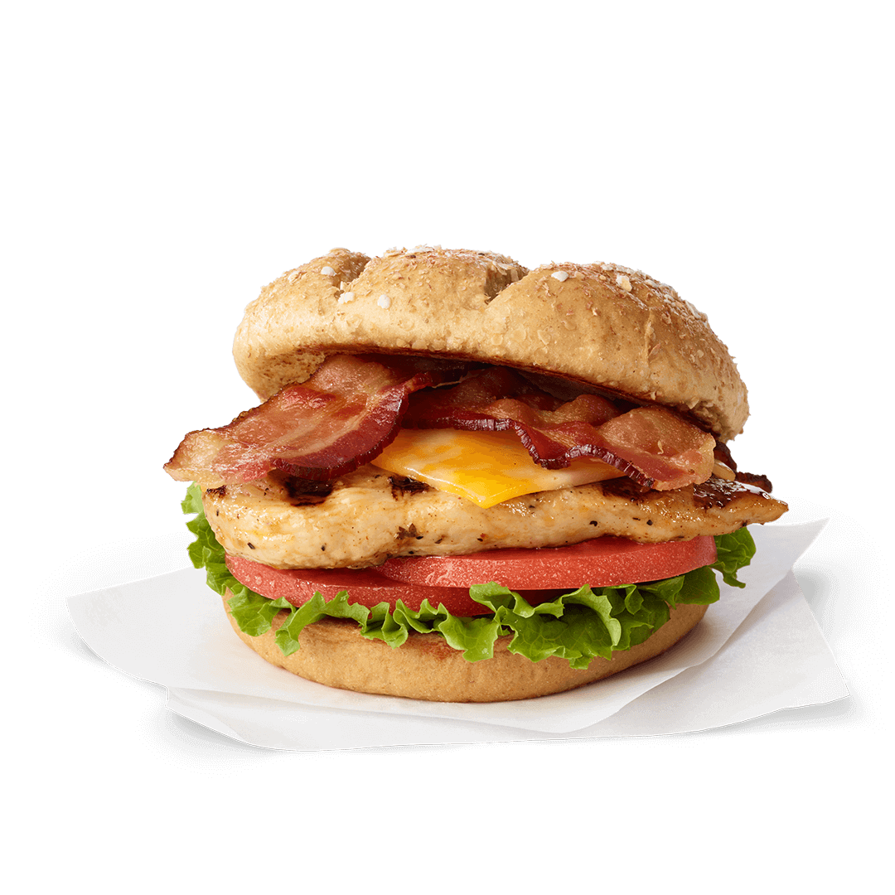
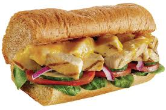
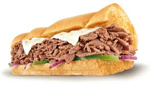
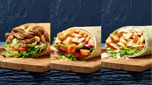

Our Recommendations
Panda Express
Panda Express is a well-known fast-food chain that specializes in serving American Chinese cuisine. One of their most popular dishes is the Orange Chicken, which features crispy chicken coated in a tangy and sweet sauce. Located in the Moran Commons to the left on the first floor, Panda Express is open from 11am to 9pm, Monday to Friday.
In addition to the Orange Chicken, Panda Express also offers delicious options like Teriyaki Chicken and Honey Sesame Chicken Breast. These dishes are loved by many for their unique flavors and quality ingredients.
With a commitment to providing tasty and convenient meals, Panda Express continues to be a favorite choice for those craving flavorful and satisfying food.
  Chick-fil-a
Chick-fil-a is a popular fast-food chain known for its delicious chicken sandwiches and waffle fries. With a focus on quality ingredients and exceptional customer service, Chick-fil-a has become a favorite among many for its tasty menu offerings and unique dining experience. Whether you're craving a classic Chick-fil-a Sandwich or looking to try their Spicy Chicken Deluxe, Chick-fil-a has something for everyone. They have a wide variety of sauces to add flavor to your meal. It's one of the cheapest places to eat on campus. Located on the lowest floor of the Elliott University Center, Chick-fil-a is open from 7:30am to 10:30pm, Monday to Friday.
 

Subway
Subway is a popular sandwich chain known for its fresh ingredients and customizable options. Whether you're looking for a classic sub or a wrap, Subway offers a variety of choices to suit your taste preferences. With a focus on providing healthy and delicious meals, Subway continues to be a go-to option for those seeking a quick and satisfying meal. The chain prides itself on its commitment to using quality ingredients and providing a wide range of options for customers with different dietary preferences. From freshly baked bread to a selection of meats, cheeses, and toppings, Subway allows customers to create their perfect sandwich or wrap. With a reputation for freshness and convenience, Subway remains a top choice for those looking for a quick and tasty meal on the go. Located at the gas station next to the Leonard J. Kaplan Center, Subway is open from 12am to 9pm all week.
  